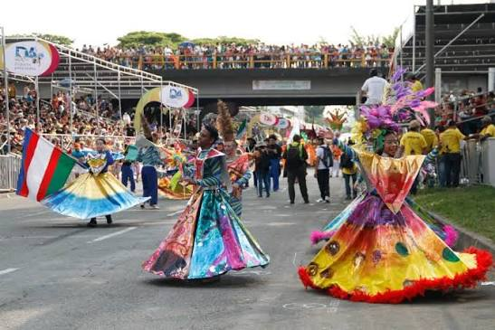
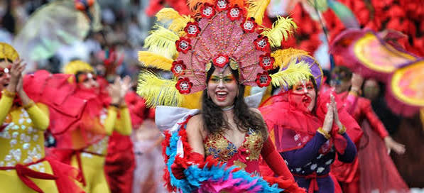
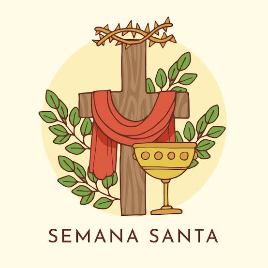
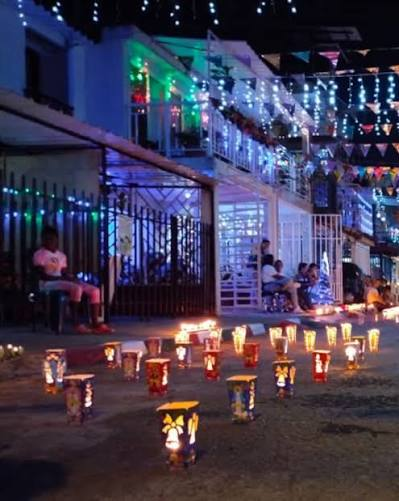
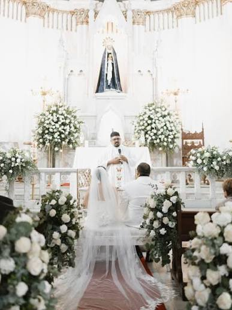

Nacida en 1957, abre con el Salsódromo: más de mil bailarines desfilan por la Autopista Sur. Incluye el Encuentro de Melómanos y Coleccionistas y conciertos en el Estadio.

Comparsas, disfraces y carrozas; Jovita Feijóo y el Riverita rescatan la memoria de la ciudad.

Peregrinaciones a los cerros de Tres Cruces y Cristo Rey, sobre todo jueves y viernes santo.

Inicio de la Navidad: aceras y balcones se llenan de faroles y velas para honrar a la Inmaculada Concepción.

Bautizo: bienvenida a la comunidad religiosa, con almuerzo familiar y asignación de padrinos.
Cortejo: el baile es la carta de presentación; hay serenatas, un borondo, un cholado, flores y chocolates.
Matrimonio: bodas católicas en templos como San Antonio o La Ermita, con «Hora Loca» y el juego de quitar la liga con los dientes. No hay dotes: se da la «lluvia de sobres» en efectivo. En comunidades afro hay marimba, cantos y viche.
Velorio: 24 horas de acompañamiento con café, agua aromática y anécdotas del fallecido.

Cultura del goce y resiliencia: alegría, hospitalidad y optimismo ante las dificultades. Conviven la devoción católica y el misticismo afrodescendiente e indígena del Pacífico.
Las Cantadoras: mujeres afrocaleñas que sostienen la memoria y los ritos con su canto. Líderes de escuelas de salsa: alejan a los jóvenes de la violencia con baile y disciplina. El «Vecino» de la tienda: eje de información y solidaridad del barrio.